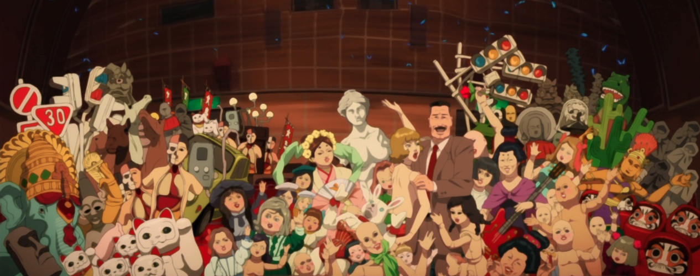

Millenium Actress
A young girl goes on a journey through film in an attempt to find someone from her childhood.

Paprika
In the future, doctors are able to visit the dreams of their patients thanks to a new technology. If, however, this technology were to fall into the wrong hands...

Tokyo Godfathers
On Christmas Eve, three homeless people find an abandoned baby and are forced by a series of events to look for her parents.